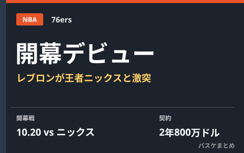

NBA開幕戦は10月20日、レブロン・ジェームズが76ersでデビューへ 王者ニックスと激突

NBAの2026-27シーズンは10月20日（現地時間）に開幕します。最大の注目カードは、今夏フリーエージェントとしてフィラデルフィア76ersに加入したレブロン・ジェームズの新天地デビュー戦。前王者ニューヨーク・ニックスとマディソン・スクエア・ガーデンで対戦し、ニックス側は優勝バナー掲揚とチャンピオンリング授与式も予定されています。レブロンは2年800万ドル（2年目はプレーヤーオプション付き）という自身のキャリア最少額クラスの契約で76ersに合流しました。
自己最少額契約で合流、背番号は「23」
レブロンは今夏、ロサンゼルス・レイカーズを離れ、フリーエージェントとしゔ76ersと2年800万ドル（2年目はプレーヤーオプション）の契約に合意したと複数メディアが報じました。レイカーズ時代の年俸から大幅に減額しての加入となり、背番号は「23」に決定。76ersは公式SNSで「王にふさわしい街。フィラデルフィアへようこそ」とコメントし、加入を正式発表しました。同じ夏にはジェイレン・ブラウンがセルティックスからトレードで76ersに加入しており、米メディアはこの動きがレブロンの移籍先決定に影響したと分析しています。
| 項目 | 内容 |
|---|---|
| 契約内容 | 76ersと2年800万ドル（2年目はプレーヤーオプション） |
| 背番号 | 23 |
| 開幕戦 | 10月20日（現地時間）対ニックス @マディソン・スクエア・ガーデン |
開幕戦は王者ニックスと激突、バナー掲揚と同時進行
76ersの開幕戦の相手は、前シーズンの王者ニューヨーク・ニックス。試合はニックスの本拠地マディソン・スクエア・ガーデンで行われ、ニックスにとっては優勝バナー掲揚とチャンピオンリング授与式を行う特別な一戦と重なります。レブロン自身は今回の移籍を「ラスト・ディシジョン（最後の決断）」と表現したと報じられており、NBA24シーズン目でのもう一つのタイトル獲得を狙う挙戦として注目を集めています。
他にもウォリアーズ・ヒート・ウルブズが関心示す
報道によれば、76ers加入が決まる前にはウォリアーズ、ヒート、ティンバーウルブズなどもレブロンの獲得に関心を示していたとされています。最終的にフィラデルフィアを選んだ背景には、ジェイレン・ブラウンの加入でチーム力が一気に高まったタイミングが重なったことが大きいと分析されています。
Q. なぜレブロンは最少額クラスの契約を結んだの？
A. 2年目にプレーヤーオプションが付く契約のため、1年後に再びフリーエージェントとなる柔軟性を本人に残しつつ、76ers側の長期的な財政負担（サラリーキャップ）を押える狙いがあると報じられています。
出典：日本経済新聞「レブロン・ジェームズ、76ersに移籍「これが最後の決断」」／スポニチアネックス「76ers「王にふさわしい街」レブロン・ジェームズ加入を正式発表！背番号「23」に決定」ほか
https://www.nikkei.com/article/DGXZQOKC250680V20C26A7000000/
https://news.yahoo.co.jp/articles/2b1c4e4cb8ed47473e40a0ef8f90bced61ab743f